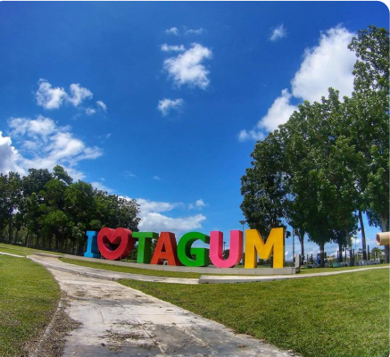
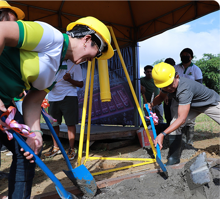
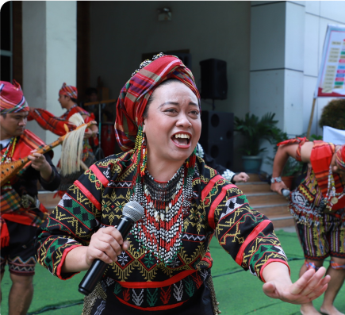
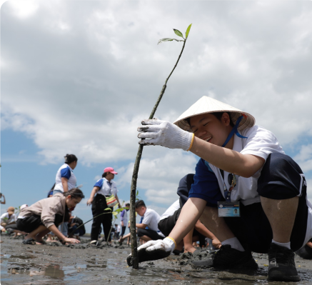

CITY OF TAGUM
Where Culture and Commerce Thrive
Tagum City is the capital of Davao del Norte, recognized for its bustling commercial districts, vibrant cultural scene, and warm community spirit. Positioned as a growing economic hub in the Davao Region, Tagum seamlessly combines modern urban conveniences with a touch of provincial charm. Visitors are often drawn to the city’s lively festivals, public parks, and thriving music scene—particularly during the Musikahan sa Tagum, which showcases the local love for arts and performance.

Geography & Area
Rivers, Plains, and Urban Charm
Tagum’s Unique Blend of Natural Beauty and Cityscapes Tagum stretches across 195 square kilometers of mostly flat plains, punctuated by gentle slopes and waterways. The city’s proximity to the Davao Gulf and the Tindug River has shaped its development and agricultural productivity. Lush fields of rice and corn flank its outskirts, while the downtown area is home to government offices, commercial centers, and well-manicured public parks. Its coastal boundaries near the Davao Gulf also allow for easy access to fresh seafood and local fishing communities.

Brief History
From Riverside Roots to Regional Powerhouse
Tagum’s Journey Through Time and Transformation Historically, Tagum began as a small riverside settlement sustained by fishing and farming. Under Spanish colonial influence, missionaries established outposts in the area, which later evolved through the American period with the construction of roads, bridges, and schools. As Tagum’s population grew, so did its economic importance. It was officially declared a city in 1998, transitioning from a modest municipality into a bustling urban hub, all while preserving its deep-rooted connection to the land and local traditions.

Demographics & Language
A Melting Pot of Traditions and Tongues
Tagum’s Rich Blend of Languages and Cultures Tagum City’s population is culturally diverse, with Cebuano (Bisaya) as the primary language spoken. Tagalog and English are common in schools, businesses, and government offices. Indigenous groups, such as the Mansaka and Mandaya, also reside in Tagum, adding to the rich tapestry of languages and cultural practices evident in festivals, crafts, and community events.

Climate & Environment
A City in Harmony with Nature
Balancing Growth with Green Initiatives Tagum enjoys a tropical climate with relatively high humidity and evenly distributed rainfall year-round. The rainy season can bring occasional heavy showers, but the area is generally spared from the strongest typhoons that affect northern parts of the Philippines. The city’s government actively promotes green initiatives, such as tree-planting programs and coastal clean-ups, ensuring sustainable growth for future generations.
Reference: davaodelnorte-tagum-city